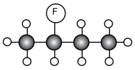
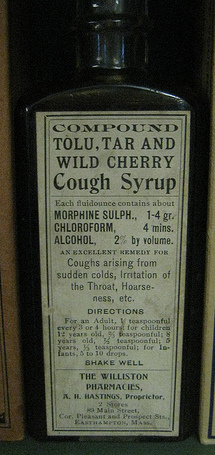
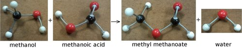

Alkyl halides are hydrocarbons with one hydrogen replaced by a halogen atom (F, Cl, Br, I). The alkyl is due to the fact that a hydrocarbon branched group has the suffix -yl and is one of the three hydrocarbons: alkanes, alkenes or alkynes. These alkyl groups contain one or more halogen atoms, which leads to the name alkyl halides. Our focus will be on the alkane alkyl halides also known as the haloalkanes (or halogenoalkanes) (see Table tab-organic-summary).
Representations of a halomethane where X can be F, Cl, Br or I: a) structural, b) molecular formula, c) 3-D line drawing, d) 3-D ball and stick model and e) 3-D space-filling model.
Representations of 2-halopropane where X can be F, Cl, Br or I: (a) structural, (b) condensed structural, (c) molecular formula and d) a ball and stick model.
Note that the halogen atom is called a substituent.

A fluorine atom as a substituent on carbon 2 of butane (2-fluorobutane).
Remember the branched chain shown in Figure fig-organic-branchedchain. That branched chain is also called a substituent.
Substituent
A substituent is an atom or group of atoms bonded to a carbon chain. This can be an inorganic atom (e.g. halogen) or an alkyl group that is shorter than the main group.
Chloroform was used as an anesthetic for years. However, aside from causing dizziness, fatigue and headaches, it was discovered to be toxic, often fatally so. Even non-fatal doses can cause damage to the kidneys and liver. Chloroform can sometimes be found in cough syrups, although not often anymore.

CFC stands for chlorofluorocarbons. Due to their low toxicity and low reactivity, CFCs were widely used in refrigeration and as propellants in aerosols. However, the low reactivity means that CFCs can get into the upper atmosphere where they are degraded by UV light and damage the ozone layer.
An organic compound is always named in accordance with the longest chain of carbon atoms that contains the functional group. If the substituent is an alkyl group it is known as a branched chain.
Some uses of haloalkanes include:
in fire extinguishers
as aerosol propellants
in refrigeration
generating foamed plastics
solvents in dry cleaning processes (not actually dry, but no water is required)
Chloroform
Haloalkanes can contain more than one halogen atom. Chloromethanes are substances that can be used as anaesthetics during operations. One example is trichloromethane, also known as chloroform (Figure fig-organic-chloroform).
a) A compound containing a carbonyl group, b) an aldehyde and c) a ketone.
In Figure fig-organic-carbonyl and are used to represent the rest of the carbon and hydrogen atoms in the molecule. For example could represent an alkyl chain, or a hydrogen atom.
If the functional group is on the end of the carbon chain, the organic compound is called an aldehyde. Being at the end of the chain means that or represents a hydrogen atom. The simplest aldehyde is methanal. The aldehyde containing 4 carbon atoms, butanal, is illustrated in Figure fig-organic-butanal. In this example represents and represents .
Note that the condensed structural formula for an aldehyde ends in not . This is because COH could be confused with the hydroxyl () group of an alochol.
The (a) structural, (b) condensed structural and (c) molecular formula representations of butanal. d) An atomic model of butanal.
Some uses of aldehydes include:
in resins (over million tons of formaldehyde are produced per year)
in the production of plasticisers and alcohols used in detergents
in perfumes and flavourants
If the carbonyl group is in the middle of the carbon chain, the compound is called a ketone. Being in the middle of the chain means that and cannot represent . The simplest ketone is propanone (also known as acetone), which contains three carbon atoms. The ketone containing 4 carbon atoms, butanone, is illustrated in Figure fig-organic-butanone.
The (a) structural, (b) condensed structural and (c) molecular formula representations of butanone. d) An atomic model of butanone.
The molecular formulae representations for propanal and propanone are identical. This is why structural and condensed structural representations are necessary.
Some uses of ketones include:
as solvents
in the production of polymers
in the production of pharmaceuticals
The general formula for both the aldehydes and ketones can be written as: . This means that they cannot be told apart from their general formula alone. There are more complex general formulas that allow aldehydes and ketones to be distinguished, but they are complex and not covered in this book.
Carboxylic acids
Carboxylic acids are organic acids that are characterised by having a carboxyl group, written as . In a carboxyl group a carbon atom is double-bonded to an oxygen atom (carbonyl group), and it is also bonded to a hydroxyl group. The simplest carboxylic acid, methanoic acid, is shown in Figure fig-organic-methanoic acid and ethanoic acid is shown in Figure fig-organic-ethanoic acid.
The (a) structural, (b) condensed structural and (c) molecular formula representations of ethanoic acid. d) An atomic model of ethanoic acid.
Carboxylic acids are widespread in nature. Methanoic acid (also known as formic acid) has the formula and is found in insect stings. Ethanoic acid , or acetic acid, is the main component of vinegar. More complex organic acids also have a variety of different functions. Benzoic acid for example, is used as a food preservative. Carboxylic acids have the general formula: .
Ethanoic acid can be produced through the oxidation of ethanol upon exposure to the oxygen in air. This is why wine that is left too long can taste acidic. Wine can easily go sour if exposed to the oxygen molecules () in the air, especially if the weather is warm.
A certain type of ant, called formicine ants, manufacture and secrete formic acid, which is used to defend themselves against other organisms that might try to eat them.
The oxidation of ethanol to ethanoic acid can also be seen in the reaction of ethanol with potassium dichromate:
The colour change that occurs is shown in the image below and the following video:
Read the following extract taken from HowStuffWorks (12/08/13):
The Breathalyzer device contains:
A system to sample the breath of the suspect
Two glass vials containing the chemical reaction mixture
A system of photocells connected to a meter to measure the color change associated with the chemical reaction
To measure alcohol, a suspect breathes into the device. The breath sample is bubbled in one vial through a mixture of sulfuric acid, potassium dichromate, silver nitrate and water. The principle of the measurement is based on the following chemical reaction:
In this reaction:
The sulfuric acid removes the alcohol from the air into a liquid solution.
The alcohol reacts with potassium dichromate to produce: chromium sulfate potassium sulfate acetic acid water
The silver nitrate is a catalyst, a substance that makes a reaction go faster without participating in it. The sulfuric acid, in addition to removing the alcohol from the air, also might provide the acidic condition needed for this reaction.
During this reaction, the reddish-orange dichromate ion changes color to the green chromium ion when it reacts with the alcohol; the degree of the color change is directly related to the level of alcohol in the expelled air. To determine the amount of alcohol in that air, the reacted mixture is compared to a vial of unreacted mixture in the photocell system, which produces an electric current that causes the needle in the meter to move from its resting place. The operator then rotates a knob to bring the needle back to the resting place and reads the level of alcohol from the knob -- the more the operator must turn the knob to return it to rest, the greater the level of alcohol.
Break into groups of three or four. Research breathalysers and then report your information to the class.
Make sure to cover the following areas:
The effect of alcohol on the body
The effect of alcohol on reaction times
The origins of the breathalyser
The term mouth alcohol and its effect on breathalyser tests.
Esters
Esters will be dealt with in much greater detail in Section 4.7.
When an alcohol reacts with a carboxylic acid, an ester is formed. Most esters have a characteristic smell. In the reaction a molecule of water is removed from the two compounds and a new bond is formed between what remains of the alcohol and the carboxylic acid. A catalyst is required in this reaction, in this case it must be an inorganic acid (e.g. ). The name of the ester is a combination of the names of the alcohol and carboxylic acid. The suffix for an ester is -oate. An example is shown in Figure fig-organic-ester.
The formation of an ester and water from an alcohol and carboxylic acid.
The esterification process is reversible with large quantities of water (although it can be slow). In an acidic environment the reaction speeds up. Reversible reactions are covered in greater detail in Chapter 8.
The esterification process with methanol and methanoic acid is shown with atomic models in Figure fig-organic-methylmethanoateester. Esters have the general formula: . This general formula can also be applied to carboxylic acids, but the more complex general formula for esters alone is not covered in this book.

The esterification process of methanol and methanoic acid to methyl methanoate and water, shown with three-dimensional model kits.
Some of the uses of esters include:
as artificial flavourants and scents
in cosmetics and beauty products
as nail varnish removers and glues
as solvents and as plasticisers
Exercises
Answer these questions on carbonyl compounds.
What other functional group does a carboxylic acid have in addition to a carbonyl group?
What is the main difference between aldehydes and ketones
What two reactants are required to make an ester?
How is ethanoic acid produced?
Draw the structural formulae for each of the following compounds. What series does each compound belong to?